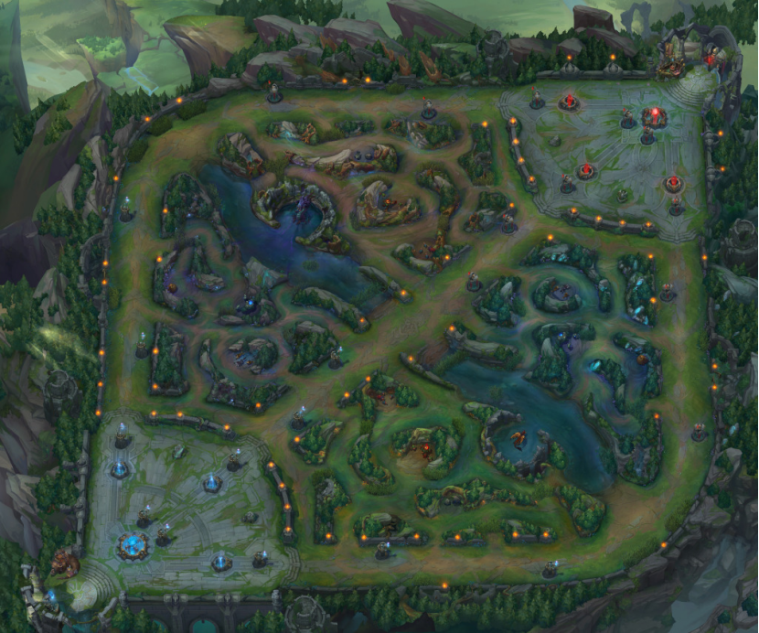

DND5z保卫水晶
保卫水晶，是一种类DOTA形式的战斗。在游戏中，您需要扮演一名英雄，和两个同伴一起，保卫己方的水晶、摧毁敌方的水晶。
比赛规则
一次保卫水晶，需要1名DM、6名PL参加。每3名PL，组成一只队伍。
双方进入一张预设的地图，出生点分别是地图西南角、地图东北角，这里也是双方队伍的水晶所在地。
将敌方的水晶摧毁，即为获胜。
初始配置
保卫水晶并不限定玩家的初始等级和资金，只要每个PL的初始开卡条件相同即可。
平衡性调整
1、不能使用那些明确说明无法在竞技场中使用的资源。
2、不能选择“娱乐专长”。
3、在轮到某名玩家行动时，如果他在现实时间5分钟后，依然没有行动，则视为原地回避并结束了回合。
4、除了法术耗材以外，其它消耗品（例如卷轴、毒药、魔药）的价格变为4倍，奇械师制造消耗品的成本也变为4倍。
5、不能自定义传奇法术，只能使用范例的传奇法术。
6、攻击、法术、以及其它可能远距离产生影响的游戏效应，最大射程若超过90尺，则降低为90尺。
保卫水晶地图机制
地图
东西400尺、南北400尺。
西南角、东北角为水晶。西北角、东南角为中立怪物。
水晶附近的高墙，高无限尺且不可摧毁；地图中央的矮墙，高30尺且可以摧毁。
战前可用buff时间为24小时级。

特殊动作
在地图上的每一名玩家，都获得了如下的特殊动作项：
·攻击水晶（动作）
你可以用一个动作，对5尺内的一块水晶造成1点伤害。直到下一个先攻轮的相同先攻值之前，你无法再次使用该动作。
·回城（附赠动作）
你可以用一个附赠动作，念诵回城的咒语。如果直到你的下个回合开始，你都没有受到任何伤害、也没有受到任何新的负面状态或不利影响，则你传送返回到己方水晶处。
·疾走（动作）
保卫水晶的地图上，如果你使用自己的动作进行疾走，你不是获得一倍的移动力，而是获得两倍的移动力。
·返回英灵殿（无需任何动作）
你可以随时用意念（无需任何动作）让自己死亡，而你的随身物品也会消失。当你复活时，这些物品重新出现。其中需要同调的物品，重新与你完成同调。
即使意识不清醒，你也可以返回英灵殿。
水晶
双方队伍的水晶分别位于地图的西南角、东北角。是一个边长10尺的大型物件，具有以下特性：
·水晶拥有3点生命值。当己方水晶的生命值降为0时，敌方获胜。
·水晶固定在空间中，不能移动。
·水晶免疫除了“攻击水晶”动作以外的一切游戏效应的影响。
·如果已方队伍的每一名玩家角色，都存活且意识清醒，则“攻击水晶”动作也对水晶无效。
巢穴效应和巢穴动作
水晶产生了如下巢穴效应：
己方水晶产生半径30尺的灵光。灵光区域内，己方角色属性检定（先攻检定除外）、豁免检定具有优势。敌方角色对处于灵光范围内的己方角色发动的攻击具有劣势。
每轮先攻20时，己方水晶可以做出如下巢穴动作之一：
·复活。水晶复活一个已经死亡的己方玩家（不需要尸体、不需要灵魂、没有距离限制），该玩家在水晶附近5尺内复活，复活后具有一半的生命值。在本场战斗的剩余时间内，该玩家的攻击检定、AC、属性检定、豁免DC、豁免加值均承受-3减值。多次复活引起的减值可叠加。
·治疗。水晶为灵光范围内的所有己方角色，恢复四分之一的最大生命值。
·复原。水晶对灵光范围内的一名己方角色，施展“次级复原术”“心之宁静”“解除法术（解除检定加值为+5）”之一。这道解除法术只对敌方法术有效。
·折跃。水晶把一个灵光范围内的己方玩家，传送到地图上一处未被占据空间。传送的最大距离，等同于地图的边长。传送的目标地点，必须是己方队伍中某一个玩家能看到的位置，不能是完全的视野盲区。
中立怪物
两只中立怪物的初始位置，分别位于地图的西北角、东南角。
·中立怪物的挑战等级，为玩家等级+2级。具体使用该挑战等级下的何种怪物，可以由DM根据双方玩家队伍进行调整。
·在玩家对中立怪物做出威胁性举动之前，它处于和平状态。一支队伍对它做出威胁性举动后，将它的先攻值设置为比做出威胁性举动的那个回合低1点的数值。它会仇恨那一支队伍，对他们进行攻击。两支队伍都对它做出威胁性举动后，它会仇恨双方，无差别地攻击。
//举例来说，李雷的先攻值为14，他在自己的回合，打了一下中立怪物。那么从此以后，中立怪物的先攻值就是13。
·中立怪物死亡后，会在三轮后重新刷新。
//举例来说，中立怪物在第二轮的先攻值10时死亡。那么第五轮的先攻值10时，怪物会重新刷新出来。
·对西北角的中立怪物，做出斩杀的最后一击的队伍，可以获得如下增益：
水晶易伤。敌方水晶下一次受到伤害时，额外受到1点伤害。
能源枯竭。敌方水晶的巢穴效应和巢穴动作失效，持续两轮。
·对东南角的中立怪物，做出斩杀的最后一击的队伍，可以获得如下增益：
水晶护盾。己方水晶的生命值+1点。
丰厚宝藏。己方队伍获得基于玩家等级的一倍标准资金。可以立即用来购物，物品会凭空出现在任意己方角色的身上，其中需要同调的物品，会立即完成同调。
等级 | 标准资金 | 等级 | 标准资金 |
1 | 200gp | 11 | 18000gp |
2 | 400gp | 12 | 27000gp |
3 | 700gp | 13 | 38000gp |
4 | 1200gp | 14 | 51000gp |
5 | 2000gp | 15 | 66000gp |
6 | 3000gp | 16 | 84000gp |
7 | 4300gp | 17 | 110000gp |
8 | 5900gp | 18 | 130000gp |
9 | 7800gp | 19 | 150000gp |
10 | 10000gp | 20 | 180000gp |